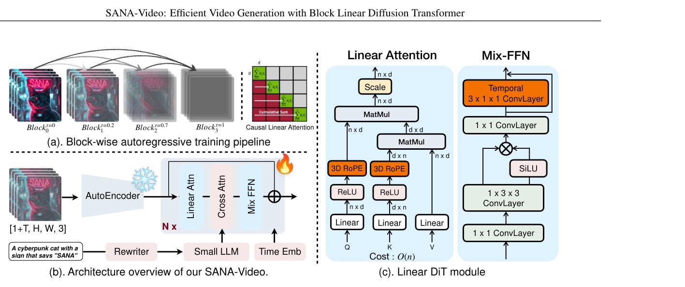
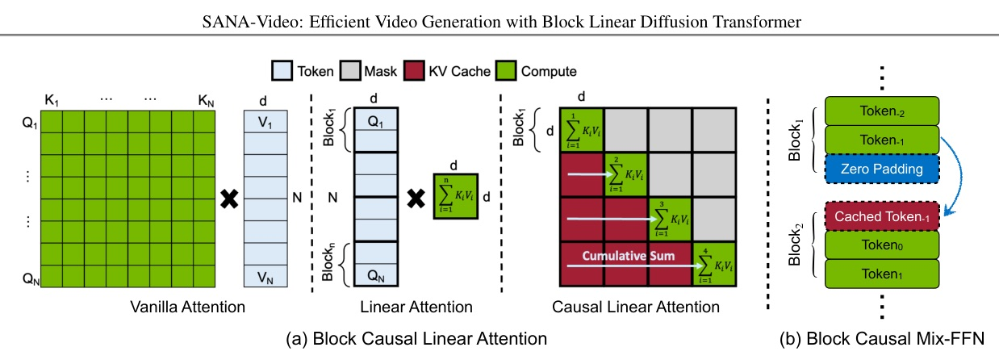
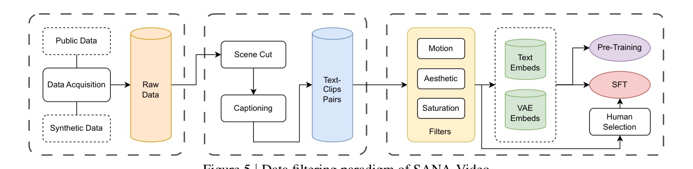
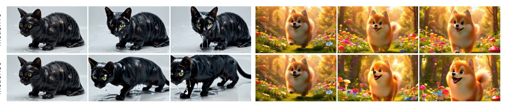
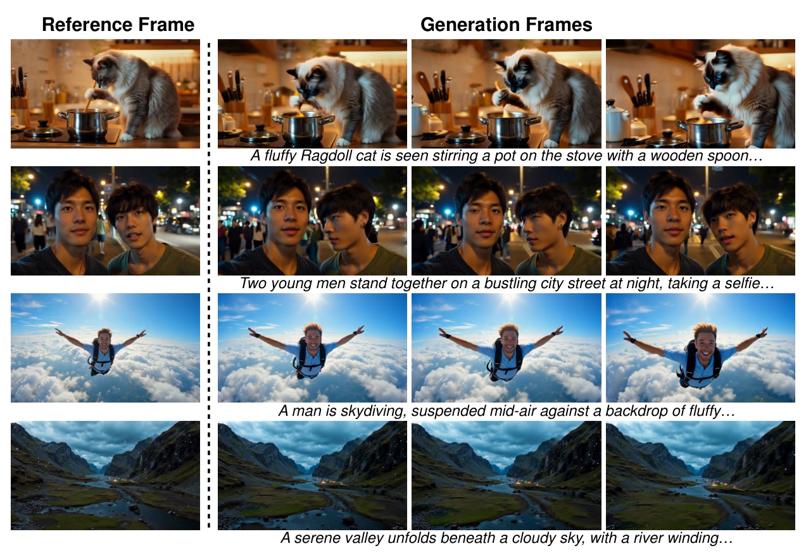

SANA-Video:
Efficient Video Generation with Block Linear Diffusion Transformer
NVIDIA / HKU / MIT / THU / PKU / KAUST
A system paper for making high-resolution and minute-length video generation practical: Linear DiT + constant-memory block KV cache + compressed VAE + deployment recipe.
Video generation is no longer only a quality scaling problem; SANA-Video reframes it as a memory-state engineering problem.
The key move is to replace a length-growing attention cache with fixed sufficient statistics of linear attention, then build the whole training / VAE / quantization stack around that choice.
The painful part of video DiT is token count, not parameter count alone
- A single 5-second 720p video with Wan 14B processes over 75,000 tokens and takes 32 minutes on one H100.
- Long video generation (>10s) is hard because full-sequence attention and ordinary KV cache both grow with the sequence.
- Existing long-video models often cap cost using local/window attention, but then the model loses global context across distant blocks.
- So the real question becomes: can a model keep global temporal memory while keeping memory fixed?
Three constraints define the design
- High resolution: 720 x 1280 x 81 frames creates a huge latent-token grid.
- Long horizon: minute-scale rollout needs past context without replaying all past tokens.
- Deployability: authors explicitly target H100 latency and RTX 5090 NVFP4 inference.
These are system-level constraints; the novelty is in combining known pieces into an efficient video generator.
What SANA-Video actually contributes
- Linear Video DiT: adapts SANA linear-attention image DiT to video with 3D RoPE and temporal Mix-FFN.
- Constant-memory block KV cache: caches cumulative linear-attention state and key sum, not every past token.
- LongSANA training: autoregressive block training plus monotonically increasing SNR sampler and improved self-forcing.
- Compression + data recipe: DCAE-V for 720p, staged training, motion/aesthetic/saturation filters, 5k human-preferred SFT clips.
- Deployment path: NVFP4 quantization on RTX 5090 with 2.4x latency speedup.
The whole pipeline is built around Linear DiT and block-wise generation

They do not train video from scratch; they continue from a T2I model
3 stages
- VAE adaptation: adapt existing T2I model to video VAEs; 5-10k steps.
- Continue pre-training: initialize from SANA T2I; train coarse-to-fine from 192P/2.5s to 480P/5s.
- AR block training: unlock long video with block linear attention + self-forcing.
Why it matters
- New temporal layers are zero-initialized with skip connections to avoid damaging image-pretrained weights.
- Coarse-to-fine training lets the model learn motion cheaply before spending high-res data.
- The final model is trained on 64 H100 GPUs for about 12 days.
Linear attention alone is not enough; RoPE placement is a stability issue
- SANA-Video uses ReLU-kernel linear attention to reduce the video attention bottleneck from quadratic to linear in token count.
- RoPE is applied after ReLU:
RoPE(ReLU(x)), preserving positional information instead of having ReLU filter it out. - But RoPE in the denominator can break the non-negative ReLU similarity property; the denominator therefore removes RoPE from Q/K to avoid zero denominators.
- Fig.3 reports localized attention maps and a stable QK-sum training curve from this design.
The temporal Mix-FFN is the small module that makes image weights speak video
- Linear attention is observed to be denser and less local than Wan2.1 softmax attention.
- SANA image generation already uses Mix-FFN convolution for locality.
- SANA-Video appends a temporal 1D convolution with a shortcut connection to aggregate local temporal features.
Ablation: Fig.6(b) reports lower training loss with temporal conv; authors also tie it to improved motion performance.
Block Linear Attention keeps global context without a growing KV cache

The cache is not the past; the cache is a compressed state of the past.
Causal linear attention only needs cumulative attention state and cumulative key sum. That is why memory can stay O(D^2) while the generated video keeps access to global history.
Why the memory slope changes
| attention type | memory | per-token compute | global context? |
|---|---|---|---|
| Causal full | O(N x D) | O(N x D) | Yes |
| Causal local | O(W x D) | O(W x D) | Window only |
| Causal linear | O(D2) | O(D2) | Yes |
- N = tokens / generated history length; W = local window; D = hidden dimension.
- Full attention keeps global context but explodes with N; local attention is cheap but forgets outside the window.
- Causal linear attention is the unusual point: fixed cache plus global accumulation.
The sampler is designed to match block-wise long-video inference
Monotonic SNR sampler
- Randomly select one block and sample a timestep with the SNR sampler.
- Propagate timesteps so later blocks have larger timesteps than earlier blocks.
- This shrinks the sampling space and trains every block with sufficient information.
Improved self-forcing
- Training with ground-truth conditions but inferring with generated conditions creates exposure bias.
- Because LongSANA cache is constant-memory, self-generated rollouts can be much longer than local-window full attention permits.
- Paper reports 4-step LongSANA generates 1-min 16 FPS 480P video in 35s on H100: 27 FPS.
DCAE-V trades reconstruction headroom for much fewer video tokens
- For 720P, SANA-Video fine-tunes DCAE into DCAE-V: spatial downsampling F=32, temporal factor T=4, channels C=32.
- The latent channel count matches the pretrained T2I latent channel count, making image-to-video adaptation easier.
- The authors argue Wan2.2-VAE would require 192 latent dimensions for the same compression ratio, versus 32 for DCAE-V, which is difficult for a small diffusion model.
| autoencoder | ratio | PSNR | SSIM | LPIPS |
|---|---|---|---|---|
| Wan2.1-VAE | 16 | 34.41 | 0.95 | 0.01 |
| Wan2.2-VAE | 21 | 35.61 | 0.96 | 0.01 |
| LTX-VAE | 64 | 32.26 | 0.93 | 0.04 |
| DCAE-V | 128 | 33.25 | 0.94 | 0.03 |
Data quality is treated as part of the efficiency recipe

- Motion: Unimatch optical flow + VMAF; the average optical-flow value is also injected into prompts as a motion score.
- Aesthetics / saturation: DOVER and OpenCV HSV saturation remove low-quality or unnatural clips.
- SFT: about 5,000 human-preferred videos balanced over motion categories and aesthetic styles.
At 720p, SANA-Video is the latency outlier
| model | latency(s) | Total | Quality | Semantic |
|---|---|---|---|---|
| Wan-2.1-14B | 1897 | 83.73 | 85.77 | 75.58 |
| Wan-2.1-1.3B | 400 | 83.38 | 85.67 | 74.22 |
| Wan-2.2-5B | 116 | 83.28 | 85.03 | 76.28 |
| SANA-Video-2B | 36 | 84.05 | 84.63 | 81.73 |
T2V / I2V comparison: speed is the main win, semantic alignment is strong
Text-to-video
| model | latency | Total | Semantic |
|---|---|---|---|
| Open-Sora-2.0 | 465 | 84.34 | 80.12 |
| Wan2.1-14B | 484 | 83.69 | 76.11 |
| Wan2.1-1.3B | 103 | 83.31 | 75.65 |
| SANA-Video | 60 | 83.71 | 81.35 |
Image-to-video
| model | latency | Total | Semantic |
|---|---|---|---|
| HunyuanVideo-I2V | 210 | 86.82 | 95.10 |
| Wan2.1-14B | 493 | 86.86 | 92.90 |
| SANA-Video | 60 | 88.02 | 96.40 |
The most distinctive chart: VRAM becomes flat over video length
- Fig.1(c) reports Block Linear Attention staying at 7.2GB VRAM from 1s to 60s at 480x832.
- The causal full-attention baseline rises through 15GB, 26GB, 46GB, 76GB and eventually OOM in the same figure.
- Tab.5: Long-video VBench Total 83.70, comparable to Self-Forcing 84.31 and above SkyReels-V2 82.67 / CausVid 81.20.
| method | Total | Quality | Semantic |
|---|---|---|---|
| CausVid | 81.20 | 84.05 | 69.80 |
| SkyReels-V2 | 82.67 | 84.70 | 74.53 |
| Self-Forcing | 84.31 | 85.07 | 81.28 |
| SANA-Video | 83.70 | 84.43 | 80.78 |
RTX 5090 NVFP4 makes the claim consumer-facing

- Quantizes QKV / output projections in self-attention, query/output projections in cross-attention, and 1x1 FFN convolutions.
- Keeps normalization, temporal convolutions, and cross-attention KV projections at higher precision to protect quality.
- Authors state quality is indistinguishable from BF16 baseline.
The evidence is useful, but it is mostly loss / latency rather than full quality isolation
- 3D RoPE: lower training loss and more localized linear attention patterns in Fig.3 / Fig.6(a).
- Temporal conv: lower training loss and improved motion performance per §4.3 and Fig.6(b).
- Attention type: linear attention gains grow with resolution, reported as 2x at 480P and 4x at 720P.
- Monotonic SNR sampler: Fig.6(d) shows better block consistency than random timestep sampling.
Why did this become an ICLR Oral despite novelty concerns?
Initial concerns
- Novelty: linear attention and block-wise processing adapt existing ideas.
- Scaling: would a 5B Linear DiT close quality gaps, or hit an architecture bottleneck?
- Ablation depth: loss curves do not fully validate generation quality.
- VAE details / fine-detail artifacts and reproducibility before code/model release.
Meta-review resolution
- Area chair accepted the novelty as system-level innovation.
- Rebuttal added training-longer/scaling arguments and quantitative ablations.
- Community value of a trained, efficient open model was treated as significant.
Where I would still be careful before adopting it
- Quality gap: 720p Quality 84.63 is below Wan-2.1-14B 85.77 and Wan-2.1-1.3B 85.67, even though Total/Semantic are strong.
- Scene diversity in long clips: a reviewer notes minute-scale samples can lock into one scenario with limited composition/action variation.
- High compression risk: DCAE-V robustness is promising, but high-frequency artifact analysis is not as detailed as the system result.
- Scaling unknown: no full answer yet on whether larger Linear DiT variants close the gap without sacrificing the efficiency story.
What an image/video engineer can reuse immediately
- When video tokens explode, optimize the state representation first; attention kernel choice changes the memory slope.
- If adapting a T2I model to video, add temporal modules through zero-initialized residual/shortcut paths to preserve pretrained behavior.
- For long generation, training-time conditioning must mimic inference-time generated context; self-forcing matters more once the cache can go long.
- Treat VAE compression, motion filtering, caption detail, and quantization as one system; the paper’s speedups are not from attention alone.
The root bottleneck in the authors’ own words
"producing a single 5-second video at 720p resolution with a model like Wan 14B requires to process over 75,000 tokens, taking 32 minutes on a H100 GPU."
5 秒 720p 已是 75k token 等級，一張 H100 要 32 分鐘；這是整篇 efficiency 敘事的起點。 §1 p.2
"we reduce the KV cache to a small and fixed memory, along with a fixed computational cost for each new token."
長影片不是靠硬截斷，而是把 cache 壓成固定大小的線性注意力狀態。 §1 p.2
Block linear cache as sufficient statistics
- The cache stores a D x D state and a D x 1 key-sum rather than N past K/V vectors.
- This is why Tab.1 lists memory O(D2) for causal linear attention.
- RoPE is omitted in Eq.3 for simplicity in the paper; RoPE handling is discussed separately in Eq.2.
Motion score is both a filter and a control variable

- Motion quality uses Unimatch optical flow and VMAF.
- Average optical flow is appended to text prompts as
Motion score: {unimatch value}. - The paper explicitly filters out both too-fast and too-slow motion because either degrades training.
The I2V claim is semantic consistency plus moderate motion

SANA-Video is a useful reminder:
For video models, the cache design can be as decisive as the model size.